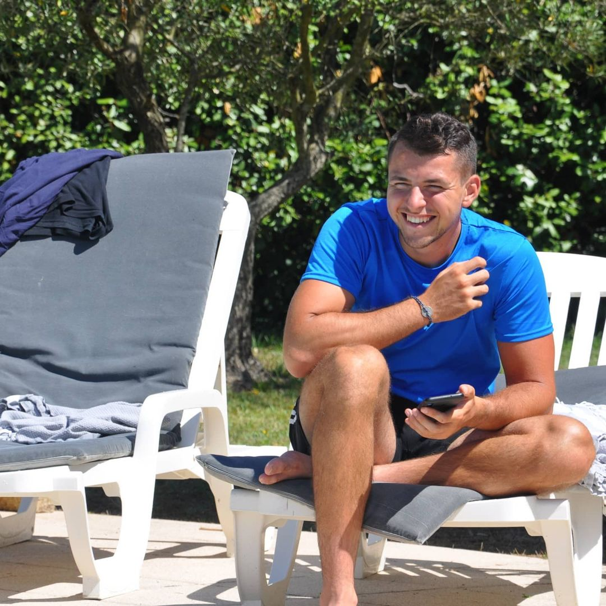

Tom Tamen
PythonMastermind27
Tom Tamen est un élève en Coding et Digital Innovation à l'IIM - Digital School Paris, à l'aube de son année préparatoire il hésite entre l'axe Jeu Vidéo et l'axe Développement Web. Il découvre une rapidement Garimé, et se découvre en parallèle une appétence pour le back-end, ce qui fini de le convaincre d'aller au CDI.
On peut générer des divs
Projets
Amateur de jeux vidéo, Tom décide de faire de sa passion son projet, en 2021 il cré portalworld, un service de location d'accéssoires de réalité virtuelle doublé de serveurs de jeu de vr.

A la sortie du projet, les critiques sont unanimes, le projet est une réussite et semble déjà se présenter comme le prochain classique du divertissement.
Un an plus tard, le projet tombe dans l'oubli et le nom de domaine portalworld.tk n'est pas renouvelé.
En parallèle Tom administre le site wordpressistrash.tk.
Hobby
C'est lors d'une sortie au parc Astérix dans le cadre de sa semaine d'intégration au détour d'une discussion qu'il découvre Florian Quenneville, celui qui changera sa vie, celui qui deviendra son mentor.
Dès lors, l'aviron sera son chemin de croix. Il s'entraine à l'ombre des regards plus de 15h par jour, la rame guidant son chemin au travers des flots agités de la seine.
Sinon il fait du skyblock sur minecraft 🧊...